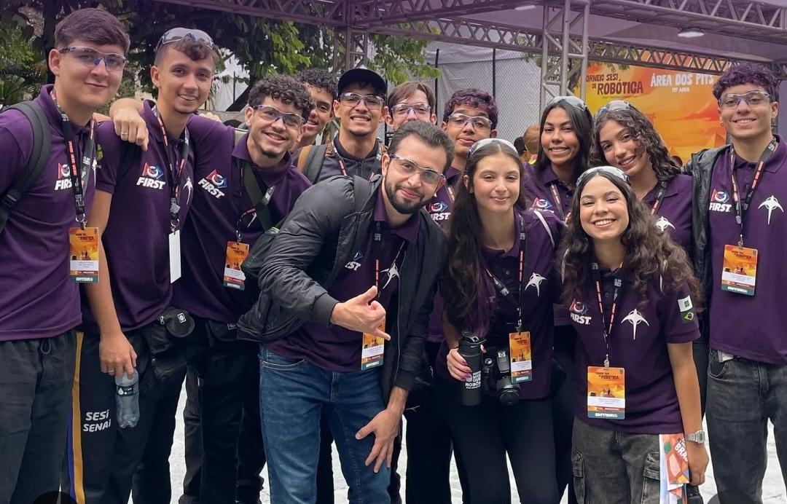
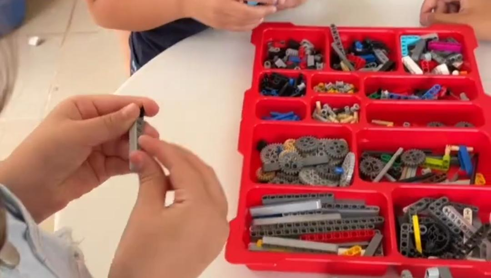
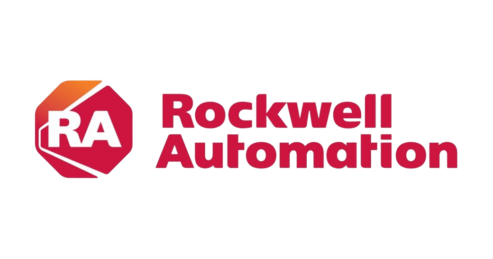

Fundada em 1989 pelo inventor Dean Kamen, a FIRST (For Inspiration and Recognition of Science and Technology) inspira jovens a se tornarem líderes e inovadores em ciência e tecnologia.
Conheça a FIRST ↗
FIRST Robotics Competition · Distrito Federal
Robot'sDistrict#9484
01
A primeira equipe de FRC do Distrito Federal
Representando Brasília por meio da ciência, tecnologia e inovação.
SCROLL PARA EXPLORAR ⌄2024Primeira temporada FRC
03Temporadas disputadas
02Participações no Championship
03Excellence in Engineering
DFDe Brasília para o mundo
A competição que move a próxima geração
Mais que robôs.
Uma plataforma para construir futuros.
FIRSTROBOTICS COMPETITION
Na FIRST Robotics Competition, estudantes do ensino médio projetam, programam e constroem robôs de porte industrial a partir de um Kit of Parts. A cada janeiro, um novo desafio é lançado; as equipes competem em alianças de três times, em campos temáticos, no espírito da Coopertition®.
Sobre a FRC ↗Gracious Professionalism®
Competir com respeito, generosidade e qualidade técnica.
Coopertition®
Colaborar mesmo em um ambiente competitivo.
Engenharia real
Transformar desafios em soluções funcionais, práticas e testáveis.
FIRST é criada
Dean Kamen funda a organização para inspirar jovens em ciência e tecnologia.
Primeira FRC
Vinte e oito equipes participam da competição inaugural em New Hampshire.
Movimento global
A FIRST conecta jovens, mentores, escolas e indústria por meio de desafios STEM.
Quem somos
Brasília tem um
novo jeito de voar.
A Robot's District #9484 é uma equipe de robótica do Distrito Federal, associada ao SESI SENAI Taguatinga. Levamos a energia de Brasília para dentro e além das arenas, unindo engenharia, educação, criatividade e comunidade.
Nota de precisão
A primeira temporada oficial da equipe na FIRST Robotics Competition foi 2024, como rookie.
NOSSA HISTÓRIA NA FRC2024 2026
2024
Rookie season
CRESCENDO presented by Haas
Primeira temporada oficial da Robot's District na FRC. Um ano de aprendizado acelerado, construção de repertório e evolução como equipe rookie.
- ROBÔ
- Robot's Distric #9484 Robot
- EVENTOS
- Brazil Regional – Brasília
- DESTAQUE
- Rookie All-Star Award

2025
Segunda temporada
REEFSCAPE presented by Haas
A equipe competiu em eventos no Brasil e chegou ao FIRST Championship, na Daly Division. Em Brasília, foi capitã da Alliance 5; em São Paulo, participou como primeira escolha da Alliance 3.
- ROBÔ
- Vespa
- EVENTOS
- Regional Brazil – Brasília · Regional Brazil – São Paulo · FIRST Championship – Daly Division
- DESTAQUE
- Excellence in Engineering — Brasília e São Paulo
2026
Terceira temporada
REBUILT
A equipe retornou ao FIRST Championship, desta vez na Johnson Division, e recebeu o Excellence in Engineering Award no Festival SESI de Educação.
- ROBÔ
- Scorpion
- EVENTOS
- Festival SESI de Educação · SESI Osasco · FIRST Championship — Johnson Division
- DESTAQUE
- Excellence in Engineering — Festival SESI de Educação

Resultados que carregam intenção
Engenharia que
deixa marca.
Três reconhecimentos Excellence in Engineering, dois caminhos até o FIRST Championship e uma trajetória construída com precisão.
Excellence in
Engineering Award
Reconhece uma equipe cuja máquina integra componentes em uma solução de engenharia funcional e prática, desenvolvida para responder ao desafio da temporada.
Ver critérios oficiais ↗Excellence in Engineering
Regional Brazil – Brasília
Excellence in Engineering
Regional Brazil – São Paulo
Excellence in Engineering
Festival SESI de Educação
FIRST Championship
Daly Division (2025) · Johnson Division (2026)
Capitã de aliança
Alliance 6 — Brazil Regional (2024) · Alliance 5 — Brasília (2025)
Além da arena
Projetos que
ativam o território.
A mesma curiosidade que movimenta a oficina também move iniciativas de educação, sustentabilidade e acesso à tecnologia.
2024

✳01 / EDUCAÇÃO & ACESSO
StarTeens
Um projeto para levar a experiência da FIRST a outras escolas, ampliar o acesso à robótica e despertar o interesse dos estudantes por ciência e tecnologia.

2025⌁02 / INDÚSTRIA & STEAM
Automação Industrial
Desenvolvido em parceria com a Rockwell Automation para inovar a tecnologia, ampliar a educação STEAM e incentivar a participação de mulheres e jovens.
 2026✿
2026✿03 / LEITURA & SUSTENTABILIDADE
Jane e a Sustentabilidade
Literatura, tecnologia e educação ambiental se encontram em uma proposta criativa para aproximar crianças e estudantes das conversas sobre sustentabilidade.
DNA visual
Uma identidade
em rota de descoberta.
Avião, ipê e Brasília são sinais do território que nos guia: movimento, natureza, cultura e a ambição de construir novos caminhos.
Avião
Inspirado no formato do Plano Piloto, representa Brasília, movimento, descoberta e novos caminhos.
Ipê
Conecta a equipe à natureza, à cultura e à beleza da paisagem do Distrito Federal.
Sistema visual
Roxo, amarelo e branco expressam inovação, energia, criatividade e clareza.
PALETA OFICIALClique para copiar o HEX
APLICAÇÕES DA MARCA
[PREENCHER Com Site loja(pendente)]
Ecossistema de apoio
Quando a indústria se aproxima,
o futuro ganha escala.
Rockwell
Automation
Automation
Pedro II Soluções em Usinagem
SESI SENAI
Taguatinga
Taguatinga
[PREENCHER — futuros parceiros]
Rockwell Automation é parceira do projeto de Automação Industrial de 2025.
Vamos conversar
A próxima parceria
pode começar agora.
Conecte sua organização a uma equipe que transforma desafios de engenharia em oportunidades para jovens, escolas e comunidade.
⌖Taguatinga, Distrito Federal, Brasil
◎@robotsdistrict [PREENCHER — URL oficial]
✉[PREENCHER — e-mail oficial]